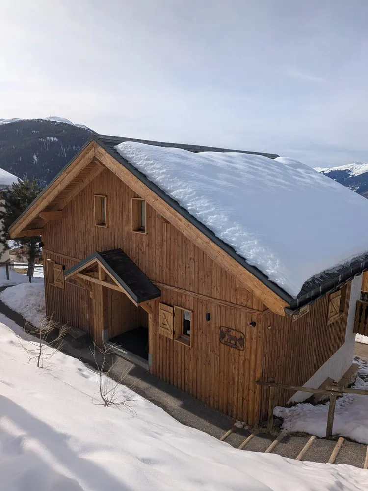
Bois & chalets01
Sablage de chalets
Permet de restaurer un bois sain et naturel, fidèle à sa structure d’origine.
Demander un devis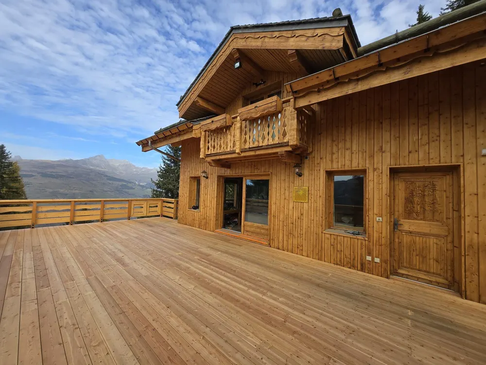
Hautes-Alpes · Artisan aérogommeur · Embrun
Décapage et nettoyage par sablage et aérogommage — des solutions performantes adaptées à chaque support pour restaurer l’aspect d’origine.
La transformation
L’aérogommage révèle la beauté naturelle des matériaux sans les abîmer. Faites glisser pour voir le travail.
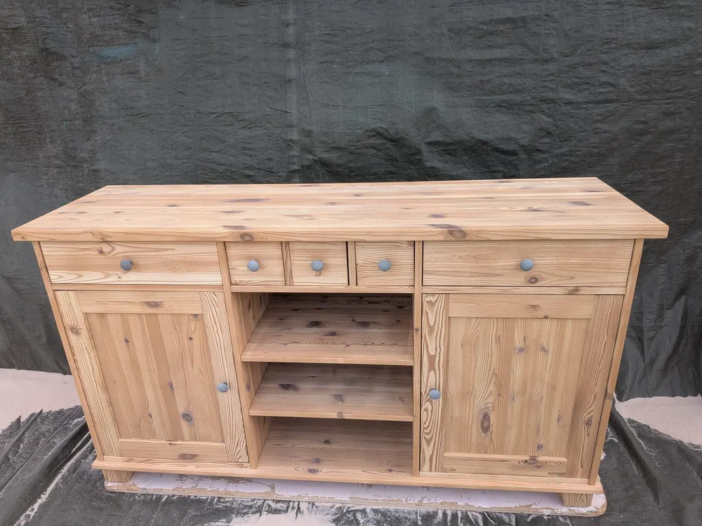
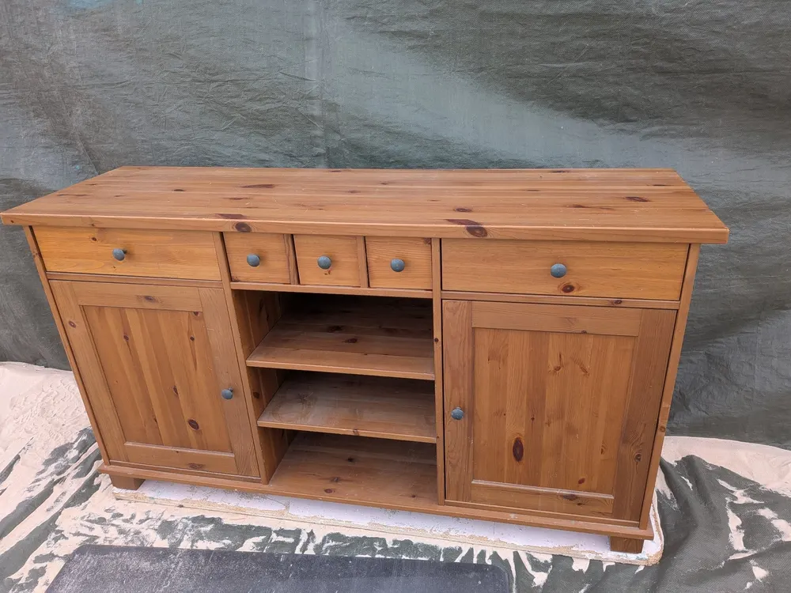
Aérogommage mobilierBuffet aérogommé grâce au Garnet 120 pour redonner une nouvelle jeunesse à ce meuble.
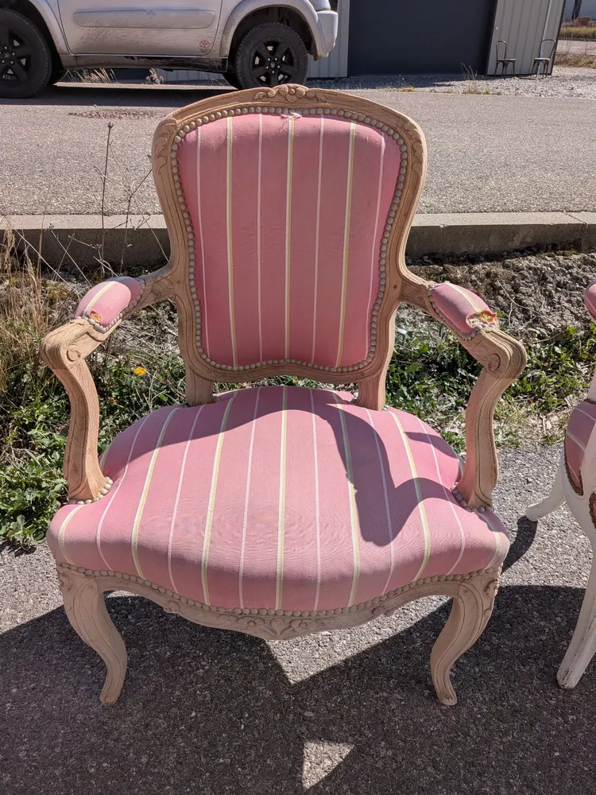
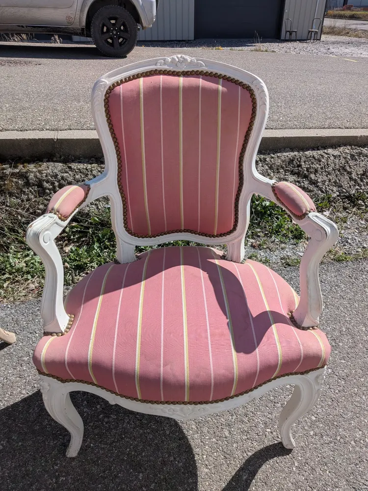
Aérogommage mobilierAérogommage à basse pression de fauteuil ancien.

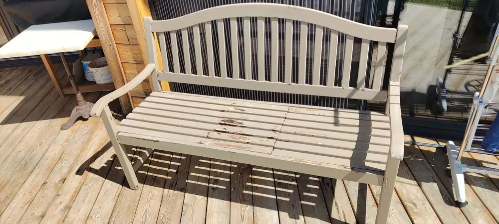
Bois extérieurUn banc de jardin grisé par les intempéries, aérogommé pour retrouver un bois sain et lumineux.
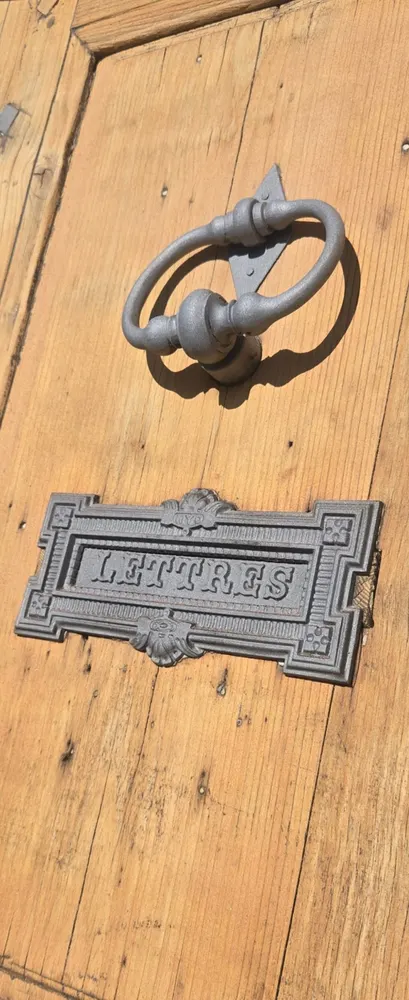
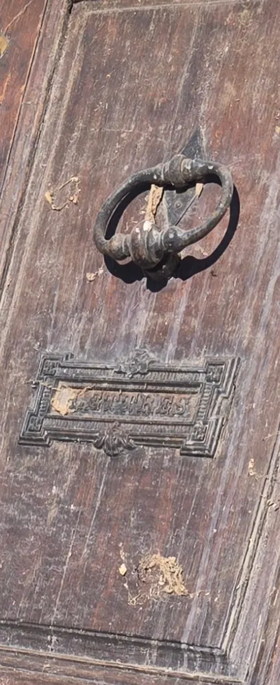
Bois & métalAérogommage d’une porte ancienne avec heurtoir et plaque en fonte.
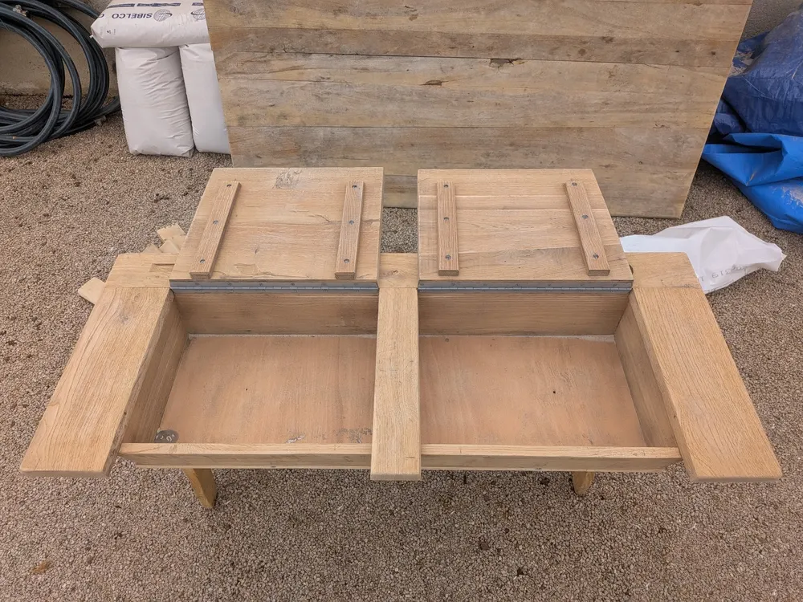
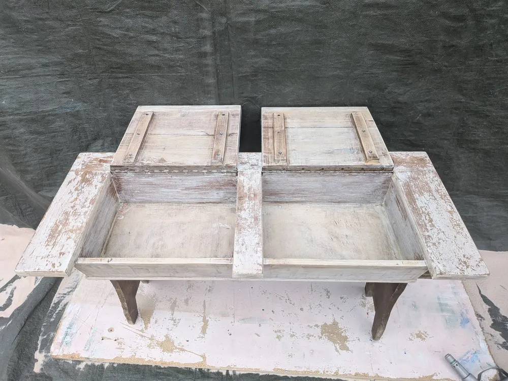
Mobilier ancienRestauration complète d’un bureau d’écolier ancien. L’aérogommage a éliminé les anciennes couches de peinture pour révéler le bois brut, prêt à être protégé.
Nos prestations

Bois & chaletsPermet de restaurer un bois sain et naturel, fidèle à sa structure d’origine.
Demander un devis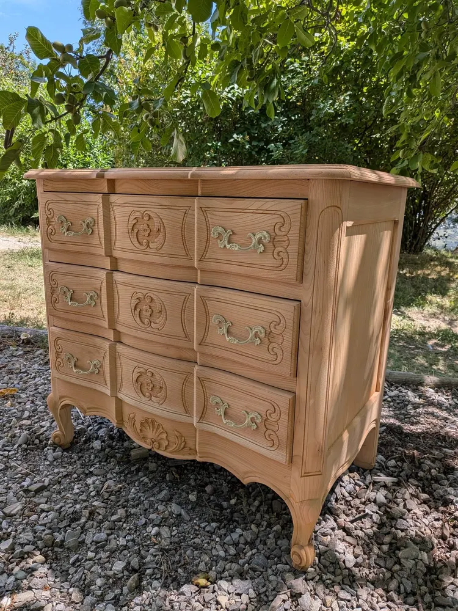
MobilierUn décapage qui préserve l’intégrité du bois : un support propre, sain et prêt à être protégé.
Demander un devis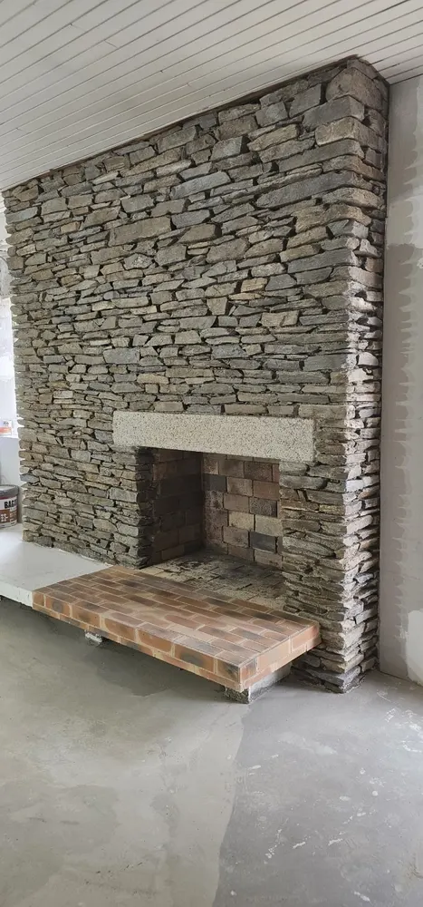
Métal & pierreRouille, peinture ancienne, salissures : portails, garde-corps, charpentes métalliques et murs en pierre.
Demander un devisEn action
Voyez par vous-même la précision et le soin apportés à chaque intervention. L’aérogommage révèle la beauté naturelle des matériaux sans les endommager.
Envoyez quelques photos de votre projet. Vous recevez une estimation détaillée sous 24h, avec une visite sur place si besoin.
Bâches, calfeutrage des ouvertures et des zones sensibles : le chantier est préparé avant le premier jet.
Abrasif et pression choisis pour chaque support — du garnet 120 à basse pression pour un meuble ancien, un réglage plus franc pour un bardage grisé.
Nettoyage du chantier et conseils pour protéger le support : huile, saturateur, vernis ou cire.
Pourquoi nous choisir
Basés dans les Hautes-Alpes, nous intervenons sur l’ensemble du département et les régions voisines. Chaque chantier est traité avec le même soin, qu’il s’agisse d’une terrasse privée ou d’un bâtiment professionnel.
Zone d’intervention
Chantiers récents
Prêt à démarrer ?
Décrivez votre projet, envoyez quelques photos et nous vous répondons rapidement avec une estimation détaillée.
06 10 50 89 82